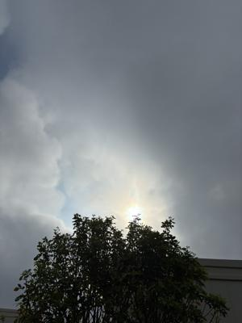
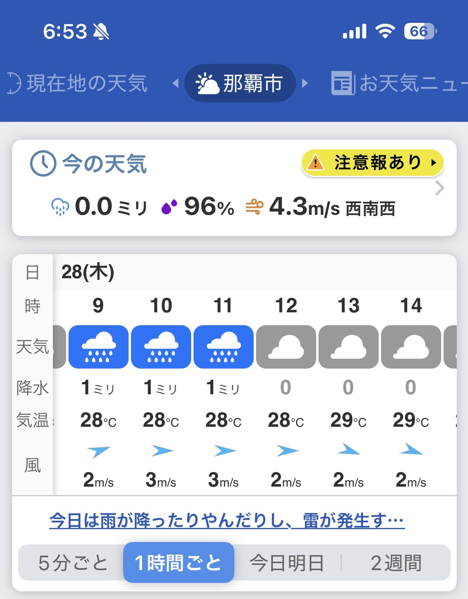
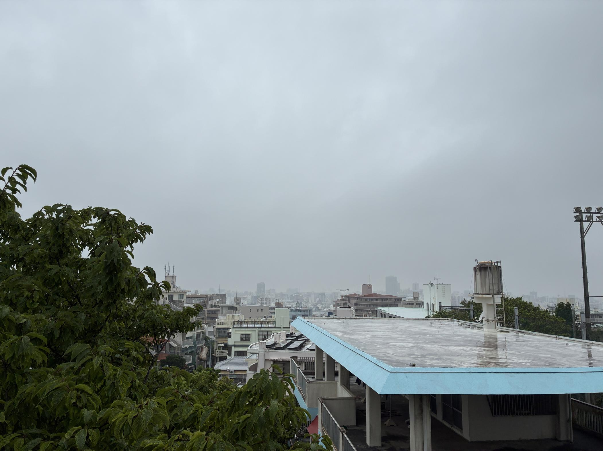
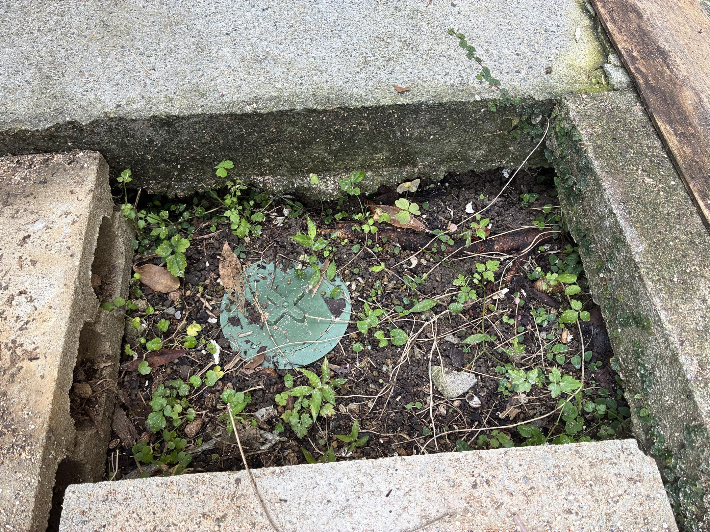
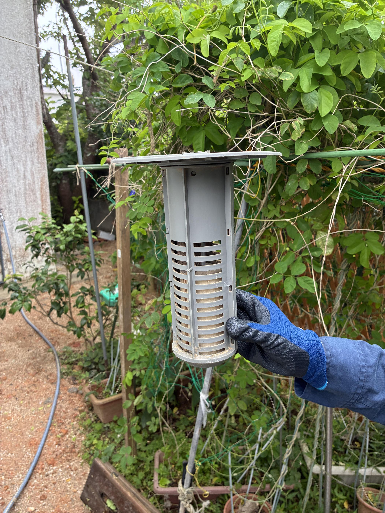
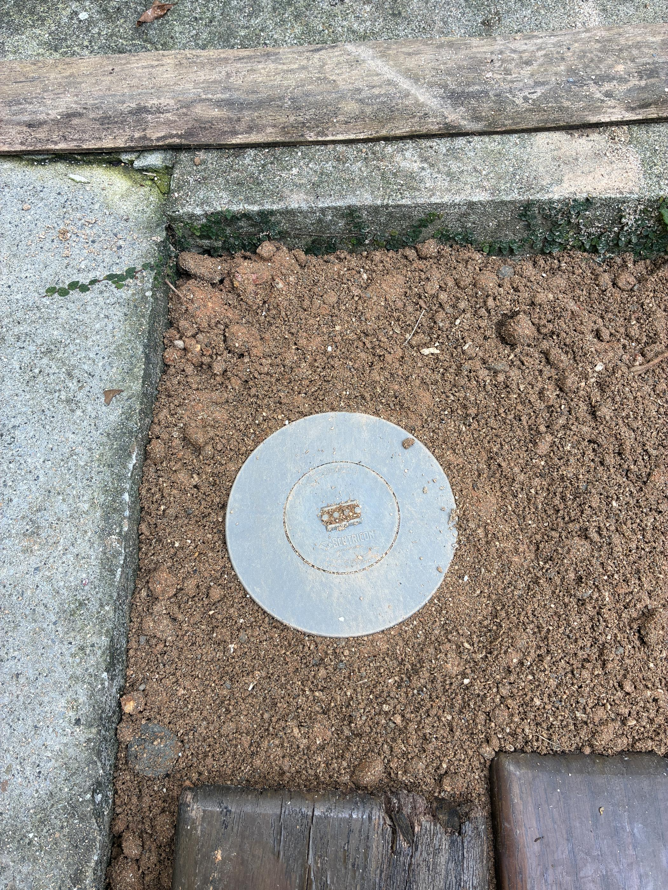

うるがいの話 ある日
最新: シロアリ対策【うるがいの話 ある日】とは 一日だけのプログです
『うるがいの話』の最新一日だけのプログで、通信料が少なく経済的だ。カニの画像をクリックすると全ての日付が載る『うるがいの話』サイトを表示します
|
|
【うるがいの話】 うるがい(ｳﾙｶﾞｲ urugai)とは、『もずくがに』の名前でとても大きくなります。 |
|---|---|
|
|
【カミマヤーの話】 猫のことを方言でマヤーといいます。カミマヤー（kamimayaa）とは、神の猫のことです。 |
|
【たながぁの音楽】 たながぁ（ﾀﾅｶﾞｰ tanagaa）とは手長えびのことで、何種類かあり大きいのは車 エビぐらいになります。 |

|
【ぶながぁの話】 ぶながぁ(ﾌﾞﾅｶﾞｰ bunagaa)とは、赤い髪の毛、赤い身体、そして身長は１ｍ２０ｃｍ ぐらい、川の蟹を食べているの目撃された。場所は沖縄県国頭郡大宜味村のと ある村僕の隣近所に住んでいる爺さんから、聞いた話です。 |
|
|
【ギーマの話】 ギーマ(giima)とは、山原の里山に咲くスズランに似た、 花を付けます。実は食べられます、 気が付くと口の周りが紫になっています。 |
2026年05月28日 (木）シロアリ対策
15:36

『雨が降らず良かったです、日程を伸ばすにも台風が来そうなの
で』、そうですね、良かったです。と、日程を決めるときの先週
の予報では、今週は晴れだった。今朝の午前中は、小雨が降って
いた。
６時５３分時点での天気予報

９時２９分、小雨が降っていた。ただ、変更の連絡がないので予
定通りと確信する。

２０年も前に埋めたシロアリの餌を埋め込んだカップ。

新しいく埋め込む４０センチほどのカップ

シロアリをおびき寄せる餌の枯れ木
新しく設置したカップ

２０年前、シロアリ被害にあったお隣さんは、シロアリ対策をし
ているかは、分かりません。ただ、うちがやっていれば隣近所は
被害が少なくなるそうです。マ、仕方ないでしょうね・・・・。
シロアリ対策は、ズーと継続するでしょう。台風が来る前に終え
てホッとする。